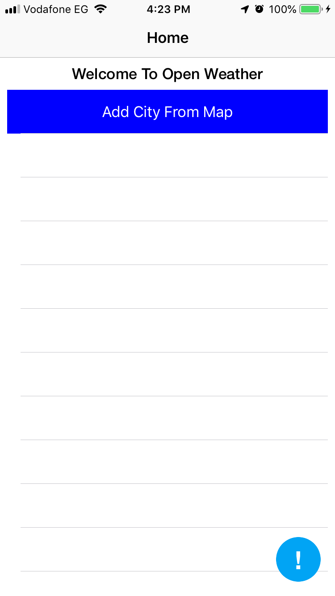
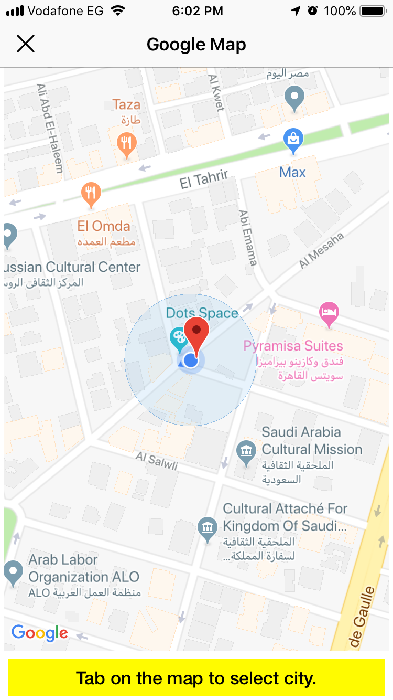
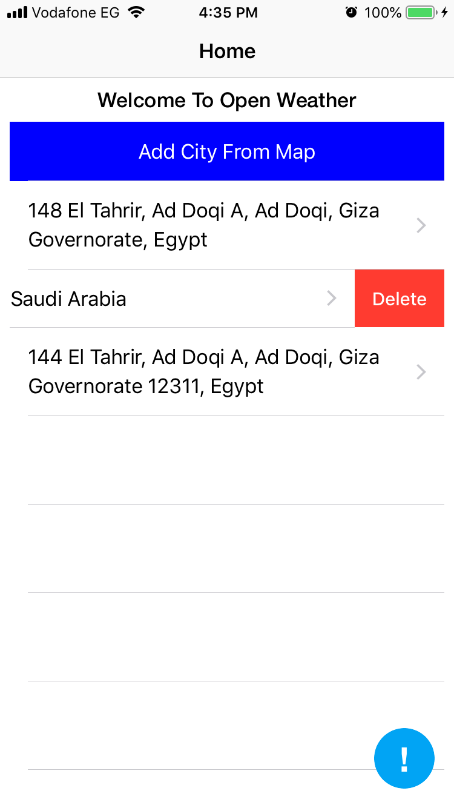
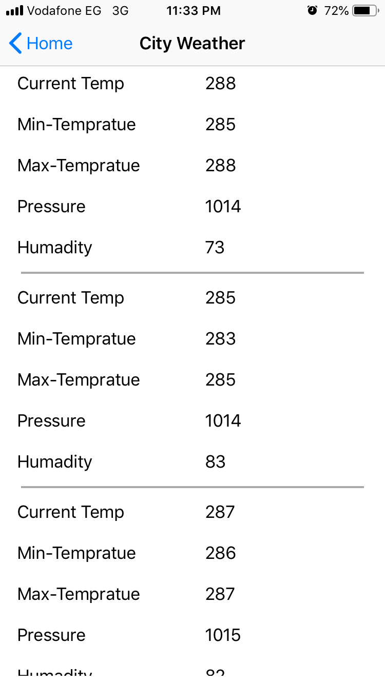

1- click on (add city from map) to add your favorite city.

2- Navigate and Tap to select Location.

3- select your locations to show details (you can swipe left to delete).

4- scroll to show 5-days forcast.
